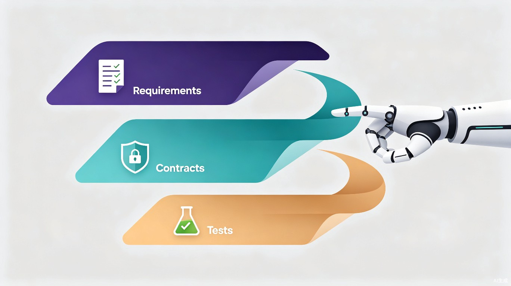

AI 编程的三重奏：Spec、契约与 TDD 的融合之道
从需求到验证的完整链路——如何在 AI 辅助编程中实现 Spec 驱动、契约式开发与测试驱动开发的有机融合
引言：AI 编程面临的核心挑战
AI 编程工具正在重塑软件开发的方式。然而，AI 编程面临一个根本性的挑战：AI 写出的代码看起来合理，但行为可能偏离意图。这不是 AI "写不出代码"的问题，而是"写出的代码不符合预期"的问题。
当你在对话框里输入"帮我写一个订单退款模块"，AI 会快速生成几百行代码。但你如何确认这段代码在所有边界条件下都正确？你如何确保它不会在不该退款时退款、不会漏掉并发冲突、不会破坏已有的积分系统？
这个问题的答案不在 AI 模型本身，而在于我们如何组织和约束 AI 的工作流程。本文探讨的三种经典开发方法论——Spec 驱动开发、契约式开发（Design by Contract）、测试驱动开发（TDD）——恰好从三个层次提供了一条从意图到验证的完整链路。
第一章：三种方法论，三种"可验证性"
在讨论融合之前，我们需要先理解这三种方法论各自的本质。有趣的是，它们的核心都可以归结为一个共同的关键词：可验证性。
1.1 Spec 驱动开发——确保"需求的可验证性"
Spec 驱动开发的核心思想是：在写任何代码之前，先把需求结构化为明确的规格文档。
它回答的问题是：系统要做什么？
Spec 并不是只有一种形态。根据软件的层级和 Spec 消费者的不同，Spec 有两个主要级别：
| Spec 级别 | 适用场景 | 典型格式 | Spec 的消费者 |
|---|---|---|---|
| 行为级 Spec | 应用层（业务系统、Web 应用、移动端） | GWT 场景、EARS 需求声明、用户故事 | 产品经理、测试工程师、AI 编程代理 |
| 接口级 Spec | 服务层（微服务、API 网关、中间件） | OpenAPI/Swagger、gRPC Proto、GraphQL Schema | 前后端开发者、下游服务、自动化 Mock 工具 |
选择哪个级别，取决于 Spec 的主要消费者是谁——谁需要读这份 Spec 来完成自己的工作，就用什么级别的 Spec 来服务他。如果产品经理和测试工程师是主要消费者，行为级 Spec（GWT 场景）最合适；如果前后端开发者是主要消费者，接口级 Spec（OpenAPI/Proto）最合适。
在微服务时代，接口级 Spec 的典型形态是 API-First：团队先产出 OpenAPI/Swagger 文档、gRPC Proto 定义或 GraphQL Schema，前后端团队基于同一份 Spec 并行开发。而在 AI 编程时代，行为级 Spec 正在崛起——以 OpenSpec、Superpowers、Spec Kit 等 SDD 框架为代表，用结构化的 GWT 场景来引导 AI 编程代理的行为。
需要强调的是，这两个级别描述的都是"系统要做什么"，不涉及模块内部的行为约束。模块内部的行为约束（前置条件、后置条件、不变式）是下一节讨论的契约式开发（DbC）的领地。这样 Spec 和 DbC 就保持了清晰的边界：Spec 管"做什么"，DbC 管"内部怎么约束"。
Spec 驱动的核心产物
行为级：GWT 场景、EARS 需求声明；接口级：API Schema（OpenAPI / Proto / GraphQL）、数据模型、错误码规范
Spec 的价值在于：它把模糊的人类意图（"用户可以退款"）变成可审核、可评审的明确规格。没有 Spec，开发就像在没有图纸的情况下盖房子。
1.2 契约式开发——确保"行为约束的可验证性"
契约式开发（Design by Contract，简称 DbC）由 Bertrand Meyer 于 1986 年提出，是 Eiffel 语言的原生特性。
它回答的问题是：模块内部承诺什么约束？
DbC 的核心概念是把软件模块之间的关系类比为商业合同，包含三个部分：
- 前置条件（Precondition）：调用方必须满足的条件——"如果你要调用我，必须保证这些条件成立"
- 后置条件（Postcondition）：被调用方必须保证的结果——"我被调用后，保证这些结果成立"
- 不变式（Invariant）：对象状态始终成立的性质——"无论发生什么，这些条件永远成立"
一个简单的例子：
def transfer(from_account, to_account, amount):
# 前置条件：调用方必须保证
require(amount > 0, "金额必须为正")
require(from_account.balance >= amount, "余额不足")
# ... 执行转账逻辑 ...
# 后置条件：被调用方必须保证
assert from_account.balance >= 0
assert to_account.balance == old_balance + amount
需要注意一个微妙之处：前置条件的义务在调用方（调用方必须确保传参合法），但检查在被调用方执行（被调用方不能信任调用方真的遵守了约定）。这是 DbC 防御式编程哲学的体现。
契约式开发的核心产物
类型签名、前置/后置条件断言、不变式、输入校验逻辑
契约的价值在于：它比普通的接口定义更深入。function sort(arr: number[]): number[] 只是接口签名（告诉你参数和返回值的类型），而 assert(result[i] <= result[i+1]) 才是后置条件（告诉你返回值一定是升序的）。契约 = 接口签名 + 行为约束断言，它约束的不只是"长什么样"，还有"必须保证什么行为"。
1.3 测试驱动开发——确保"实现的持续可测试性"
测试驱动开发（TDD）由 Kent Beck 于 1999 年提出，是极限编程的核心实践。
它回答的问题是：行为是否正确？
TDD 的核心是严格的 Red-Green-Refactor 循环：
TDD 的 Red-Green-Refactor 循环
TDD 的核心产物
自动化测试用例（单元测试、集成测试）、持续回归测试套件
TDD 的价值在于：测试用例本身就是可执行的行为规格。当你写完测试，你已经精确地定义了"正确行为"是什么样子。测试不只是"写完后检查一下"，而是"先定义正确，再实现正确"。
1.4 三者的对比总览
| 维度 | Spec 驱动 | 契约式开发 | TDD |
|---|---|---|---|
| 作用层次 | 系统/服务（宏观） | 函数/类（微观） | 功能/模块（中观） |
| 回答的问题 | 系统要做什么？（行为/接口） | 模块承诺什么约束？ | 行为是否正确？ |
| 主要产物 | GWT 场景、API Schema | 断言、不变式 | 自动化测试用例 |
| 验证方式 | BDD 验收、合约测试、Mock | 运行时断言 | 持续回归测试 |
| 核心价值 | 意图对齐、团队解耦 | 防御式编程、边界精确 | 行为正确、设计演进 |
| 代表工具 | OpenSpec, Superpowers, OpenAPI, gRPC, Pact | Eiffel, Pydantic, zod | xUnit, pytest, Jest |
| 验证的本质 | 需求的可验证性 | 行为约束的可验证性 | 实现的持续可测试性 |
第二章：从需求到实现——逐层递进的验证链
三者不是平行关系，而是逐层细化的递进关系。每一层都把"可验证性"往下推一层，让正确性从模糊走向精确。
从意图到验证的完整链路（Spec 有两个级别，但逻辑位置相同）
2.1 上层驱动下层
这条链路的逻辑是上层驱动下层，下层验证上层：
- Spec 驱动契约的定义——先知道"要什么"，再定义"怎么约束"
- 契约驱动测试的编写——测试就是"检查契约是否被满足的可执行验证"
- TDD 驱动实现——代码要让契约成立、让测试通过
2.2 下层验证上层
反过来，每一层也在验证上层是否足够精确：
- 如果 Spec 太模糊，你写不出具体的契约——逼你澄清需求
- 如果契约有漏洞，测试会暴露——逼你完善约束
- 如果测试全部通过但行为不对，说明 Spec 或契约本身有误——逼你回头审视
三者形成一条验证链：需求可验证 → 行为可验证 → 实现可验证。这就是为什么它们能互补，而非互相替代。
2.3 "基于"与"驱动"的微妙区别
在进一步讨论之前，值得厘清两个用语的微妙区别：
- "基于契约"（based on）强调契约是基础和参照，开发活动在契约之上展开。契约像宪法——规定了边界，但不会告诉你先砌哪面墙。
- "测试驱动"（driven）强调的是流程本身的强制性。不写测试就没法往下走，它用工作顺序逼你先想清楚预期行为再动手。
"基于"是被动驱动——契约写了放在那，违反了运行时会告诉你。"驱动"是主动驱动——不完成上一步就不能进入下一步。两者互补：契约管"正确性的边界"，TDD 管"开发的节奏"。
契约管"正确性的边界"，TDD 管"开发的节奏"。 Spec 管的是"方向"——三者各司其职。
第三章：AI 编程中的融合实践
理解了三种方法论的本质和递进关系后，核心问题来了：如何在 AI 编程的工作流中把三者有机融合？
答案是：把 AI 变成每一层的"产出加速器"，让人成为每一层的"质量守门人"。AI 负责快速生成，人负责审核把关。
3.1 四阶段工作流
AI 辅助编程的理想工作流可以分为四个阶段：
阶段一：AI 辅助生成 Spec
AI 从自然语言需求中产出结构化的规格文档。根据项目类型，可能是行为级 Spec（GWT 场景）或接口级 Spec（API Schema），也可能两者兼备。人审核 Spec 是否准确反映了业务意图。
这一步的价值
把模糊的人类意图变成精确的、可审核的规格。AI 的角色是结构化翻译器，人的角色是业务正确性审核者。
阶段二：AI 从 Spec 推导契约
Spec 确认后，进入 DbC 的领地——让 AI 基于规格推导出每个函数/类的契约定义：
// 从 Spec 推导出的契约
interface RegisterService {
// 前置条件：email 格式合法、password 满足强度要求
register(email: string, password: string): RegisterResult;
// 后置条件：返回的 userId 非空
// 不变式：用户表中无重复邮箱，密码已哈希存储
}
AI 从 Spec 中推导出类型签名、输入校验逻辑（Pydantic model / zod schema）、前置条件检查、后置条件断言、不变式定义。人审核契约是否过严（拒绝合法调用）或过松（放过非法调用）。
这一步的价值
把 Spec 中定义的外部行为要求，转化为代码中可执行的内部约束断言。契约就是人与 AI 之间的"协议"——先审核协议是否合理，再让 AI 按协议写代码。
阶段三：AI 基于契约生成测试
契约一旦确定，测试的生成就有了系统化的推导依据：
| 契约条款 | 推导出的测试用例 |
|---|---|
| email 格式合法（前置条件） | 非法邮箱格式应拒绝；合法格式应通过校验 |
| 密码至少 8 位（前置条件） | 7 位密码应拒绝；8 位密码应通过 |
| 密码包含大小写数字（前置条件） | 纯小写应拒绝；大小写数字混合应通过 |
| 返回 userId 非空（后置条件） | 注册成功后验证 userId 不为 null |
| 邮箱唯一（不变式） | 重复邮箱注册应返回错误；查询数据库验证无重复 |
| 密码已哈希存储（不变式） | 注册后查询数据库验证密码字段非明文 |
AI 从前置条件推导出边界值测试（临界值、零值、最大值），从后置条件推导出行为验证测试，从不变式推导出状态完整性测试。人审核测试是否覆盖了关键的契约边界。
这一步的价值
测试不再是"凭空想出来的"，而是从契约系统地推导出来的。这就是 TDD 的精髓——测试先于实现存在，且每一条测试都有明确的依据。
阶段四：AI 在约束下生成实现
有了 Spec、契约和测试三重约束，AI 生成实现代码：
- 基于契约的类型签名实现函数逻辑
- 在代码中保留前置条件检查和后置条件断言
- 确保所有测试通过
- 运行时如果契约被违反，断言立即捕获
人审核实现质量——可读性、性能、安全性——并运行全部测试确认绿灯。
这一步的价值
AI 不需要猜测"代码应该保证什么"，契约已经说清楚了。实现偏离意图的概率大幅降低。
3.2 一个完整示例：用户注册模块
让我们用一个完整的例子串联四个阶段：
Step 1 — Spec（行为级 + 接口级）
// 【行为级 Spec — GWT 场景】
Scenario: 成功注册
Given 一个未注册的邮箱和符合强度要求的密码
When 用户提交注册请求
Then 系统创建账户并返回 userId 和 token
Scenario: 邮箱已注册
Given 一个已被注册的邮箱
When 用户提交注册请求
Then 系统返回 409 错误
// 【接口级 Spec — API Schema】
POST /api/register
Request: { email: string, password: string }
Response: { userId: string, token: string }
Error: { code: number, message: string }
400 — 参数格式不合法 | 409 — 邮箱已被注册 | 500 — 服务器错误
行为级 Spec 描述"系统应该做什么"，接口级 Spec 描述"接口长什么样"。两者都只定义外部行为，不涉及内部实现约束。
Step 2 — 契约（从 Spec 推导，进入 DbC 领地）
前置条件： - email 符合 RFC 5322 格式 - password.length >= 8 - password 包含大写、小写、数字 后置条件： - 返回的 userId 为非空 UUID - 返回的 token 为合法 JWT - 用户已持久化到数据库 不变式： - 用户表中 email 列唯一 - 密码字段为 bcrypt 哈希，非明文 - 所有账户余额 >= 0（通用不变式）
Step 3 — 测试（TDD：从契约推导）
// 正常路径
test("合法邮箱 + 合法密码 → 返回 userId 和 token")
// 边界值
test("密码恰好 8 位 → 通过")
test("密码 7 位 → 拒绝 400")
test("密码纯小写无数字 → 拒绝 400")
// 异常路径
test("重复邮箱 → 拒绝 409")
test("邮箱格式非法 → 拒绝 400")
// 不变式检查
test("注册后查询 DB → 邮箱唯一、密码已哈希")
Step 4 — 实现（在 Spec + 契约 + 测试三重约束下）
async function register(email: string, password: string) {
// 前置条件检查（契约）
validateEmail(email); // RFC 5322
validatePassword(password); // 长度 + 强度
// 检查邮箱唯一
if (await userRepo.findByEmail(email)) {
throw new ConflictError("邮箱已被注册");
}
// 持久化
const user = await userRepo.create({
email,
passwordHash: await bcrypt.hash(password, 10),
});
// 后置条件断言（契约）
assert(user.id !== null, "userId 不应为空");
// 返回
return { userId: user.id, token: generateToken(user.id) };
}
运行全部测试 → 绿灯。契约断言保留在代码中作为运行时守护。即使未来有人修改了这段代码，如果修改导致后置条件被违反，断言会在第一时间暴露。
第四章：人在回路中的位置
AI 不替代人的判断，而是在每层加速产出。人在每层负责审核正确性：
| 层次 | AI 的角色 | 人的角色 | 审核要点 |
|---|---|---|---|
| Spec | 结构化翻译器 | 业务意图审核者 | Spec 是否准确反映业务？是否遗漏场景？ |
| 契约 | 约束推导引擎 | 合理性审核者 | 约束是否过严或过松？边界是否完整？ |
| 测试 | 用例生成器 | 覆盖度审核者 | 是否覆盖关键边界？是否遗漏业务特有场景？ |
| 实现 | 代码生成器 | 质量审核者 | 可读性、性能、安全性是否达标？ |
核心原则：先审核标准（Spec 和契约），再让 AI 按标准产出（测试和实现）。标准对了，产出才有意义。
这就像建筑工程：先审核图纸（Spec），再审核结构计算书（契约），然后让施工队（AI）按图纸和计算书施工，最后验收（测试）。你不会让施工队在没有图纸的情况下自由发挥——AI 编程也不应该。
第五章：为什么这个策略对 AI 编程特别有效
5.1 解决 AI 编程的核心风险
AI 编程最大的风险不是"写不出代码"，而是写出的代码看起来合理但行为偏离意图。先定 Spec 和契约，就是在写代码之前把"意图"固化成可验证的断言。AI 实现偏离意图的概率会大幅降低。
5.2 让 AI 的"幻觉"有边界
AI 编程中的"幻觉"——凭空编造不存在的 API、虚构不正确的逻辑——是真实存在的问题。契约和测试构成了双重的幻觉边界：
- 契约在代码层面约束 AI 的输出必须满足声明的条件
- 测试在行为层面验证 AI 的输出是否产生了正确的结果
即使 AI 产生了幻觉，契约断言会立即捕获异常状态，测试会在运行时暴露错误行为。
5.3 可审计、可回溯
当 AI 生成的代码出了问题，你需要回答"问题出在哪一层？"
- 如果 Spec 有误 → 回到需求层修正
- 如果契约有漏洞 → 回到设计层补充约束
- 如果测试不够 → 补充遗漏的测试用例
- 如果前三层都没问题但实现有 bug → 运行测试快速定位
没有这条链路，你面对 AI 生成的几百行代码，只能逐行审查——效率极低，且容易遗漏问题。
5.4 与重构的天然亲和
软件需要持续演进和重构。有契约和测试的代码库，重构时底气完全不同：
- 测试套件是重构的安全网——改坏了立刻红灯
- 契约断言是补充防线——测试没覆盖的边界，运行时断言会捕获
- 类型系统（契约的一部分）提供编译期保障——重构时自动检测接口不匹配
三层保障体系：测试（行为）+ 契约（断言）+ 类型（编译），覆盖了从运行时到编译期的完整质量防线。
总结：核心公式
AI + Spec 驱动 = 把模糊需求变成精确规格（行为级 + 接口级）
Spec + 契约式（DbC） = 把外部行为规格变成内部可执行断言
契约 + TDD = 把断言变成可验证的测试
TDD + AI 实现 = 在约束下快速生成正确代码
三者形成一条从意图到验证的完整链路。AI 在每个环节充当产出加速器，人在每个环节充当质量守门人。
用一个比喻来收尾：Spec 是图纸，契约是结构计算书，测试是验收标准，AI 是施工队。先画图纸（定义做什么），再出结构计算书（定义内部怎么约束），然后让施工队按图纸和计算书施工，最后用验收标准检查成果——顺序对了，结果不会错。